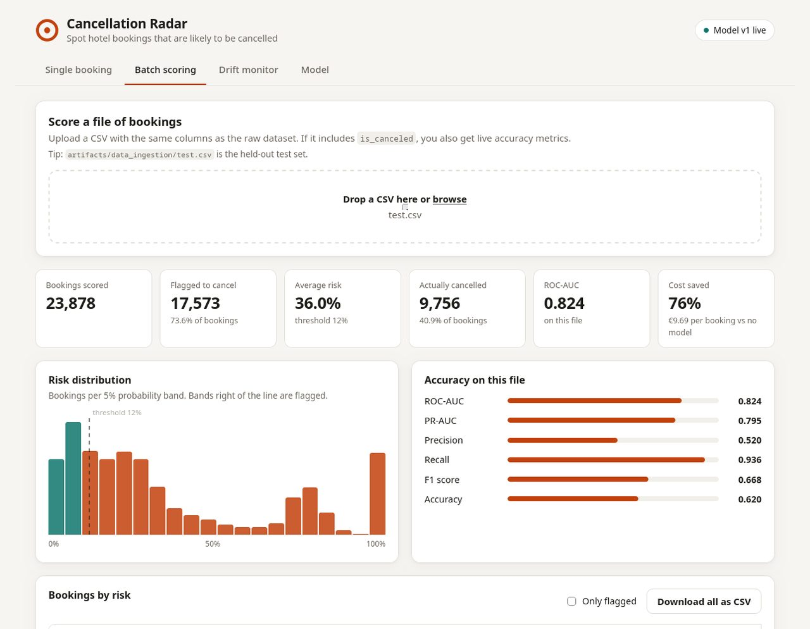
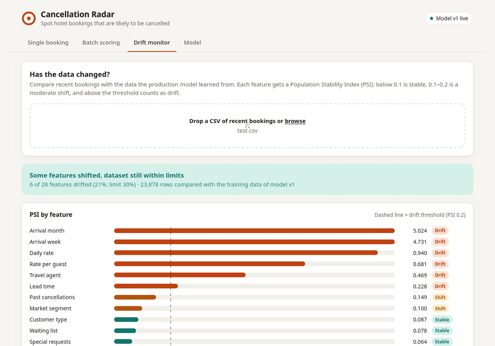

01The problem
In the Hotel Booking Demand data, 37% of bookings were cancelled: 44,224 bookings worth about €16.7 million in booked room revenue. Cancelled bookings were made much further ahead (median lead time 113 days against 45), so the rooms are hard to resell.
The usual defences are blunt. Overbooking every night risks turning away guests who do arrive, and strict non-refundable deposits for everyone put customers off. The hotel needs to know at the moment a booking is made how likely it is to be cancelled, and whether it is worth doing something about it.
02Data
119,390 bookings at a city hotel and a resort hotel in Portugal, July 2015 to August 2017. Before modelling I checked which columns are only filled in at check-in, because they make a model look brilliant in testing and useless in practice.
Two were proven from the data, not just guessed: 7,416 bookings requested parking and none cancelled (parking is recorded on arrival), and country is confirmed at check-in, so no-shows look like cancellations. Six leaking columns are dropped at ingestion, and the API rejects them with a 422 error.
03Approach
- Remove leakage. Dropped the six check-in columns. Honest ROC-AUC fell from 0.875 to 0.824, which is the number that will hold up in production.
- Test the way it will be used. Trained on older arrivals and tested on the newest 20%. A random split overstates ROC-AUC by about 0.08 because it mixes past and future bookings.
- Tune and compare. Optuna searched XGBoost hyper-parameters over 30 trials with early stopping. Logistic Regression and Random Forest went through exactly the same steps as baselines.
- Choose the threshold by cost, not 0.5. A missed cancellation costs about €100 (an empty room), a needless reminder about €20. The threshold that minimises expected cost on a validation slice is 0.12.
- Validate and monitor. Pandera checks every column against a schema, PSI drift checks run in the API and CLI, and Evidently writes a drift report on every training run.
- Promote safely. The MLflow Model Registry gives a new version the @production alias only if it beats the live model on the same test set. Rollback is one command.
04Results
| Model | ROC-AUC | PR-AUC | Cost / booking |
|---|---|---|---|
| XGBoost, Optuna-tuned (production) | 0.824 | 0.795 | €9.69 |
| Random Forest | 0.829 | 0.798 | €9.65 |
| Logistic Regression | 0.799 | 0.728 | €10.87 |
| No model (flag nothing) | €40.86 |
Both tree models clearly beat Logistic Regression, and Random Forest and XGBoost are within 0.005 ROC-AUC of each other. XGBoost stays in production because it is faster and the SHAP code is built around it; picking the winner on the test set would bias the test score.
Why not the 0.95 often quoted for this dataset? The same quick model scores 0.954 with a random split and the check-in columns kept, 0.906 with leakage removed, and 0.827 with a time split and no leakage. The higher numbers measure the leak, not the model.
05System and deployment
Training tools are too heavy for hosting, so a lean serving bundle without MLflow (about 290 MB) runs as a Vercel Function. A multi-stage Docker image with the model built in runs anywhere else.


06Limitations
- The split is by arrival date; a stricter split would use the booking date (arrival minus lead time).
- 99% of non-refundable bookings cancelled, which looks like a recording artefact, and the model relies on it heavily.
- Probabilities run low on the test period because of seasonal drift; recent-month retraining or calibration would fix this.
- The two costs are assumptions to agree with the business before using the flags. The API has no authentication.